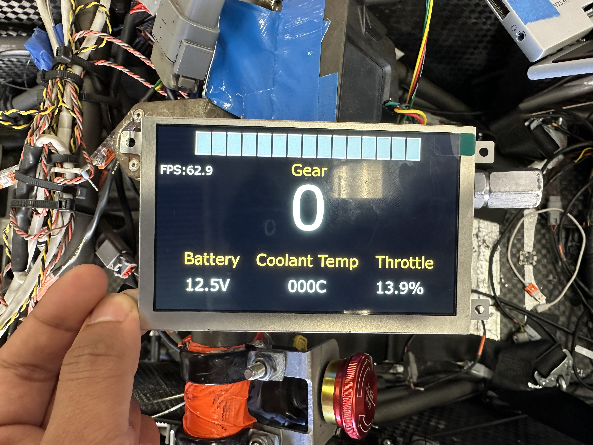

Custom Display
Purpose
Custom Display is a driver information display for the car, built on an STM32H7 microcontroller with a Riverdi LCD. The STM32 reads live data from the Haltech ECU over the car's CAN bus and renders it on-screen using TouchGFX, an embedded graphics library for STM32.
Display hardware: https://riverdi.com/product/5-inch-tft-lcd-screen-stm32u5-embedded-display-rvt50hqsfwn01?srsltid=AfmBOoq_PbYSuQUkMhpmtfA5kOqO7L9fX0RrjbtiRxhyNDaXJeP7M8Rh

Overview
| Detail | Value |
|---|---|
| Microcontroller | STM32H7 |
| Display | Riverdi LCD |
| Graphics Library | TouchGFX |
| Language | C / C++ |
| RTOS | None (simplified loop via Model::tick) |
| Data Source | ECU via CAN bus |
Architecture
All code is written in C style but integrates with TouchGFX, a C++ library. There is no RTOS — the update loop runs entirely inside Model::tick for simplicity.
Data Flow
CAN Bus (mostly ECU though it can be anything on CAN bus)
│
▼
CAN Interrupt (main.c)
│ updates
▼
can_types.cpp ── UI data elements & handlers
-----
Model.cpp ── data update tick
│
▼
Screen1Presenter.cpp
│
▼
Screen1View.cpp ── UI element rendering
Key Files
| File | Role |
|---|---|
main.c |
CAN interrupt setup; RxFifo0Callback routes incoming CAN frames |
can_types.hpp |
Declares CAN value types, IDs, default values, etc |
can_types.cpp |
Defines CAN values and the CAN_value_ptrs array |
Model.cpp |
Polls updated CAN data each tick and forwards to presenter |
Screen1Presenter.cpp |
Mediates between model and view |
Screen1View.cpp |
Updates UI elements; handles special visual logic |
Contributing
The TouchGFX tutorials and docs are pretty good for understanding how it works. Also, I used CubeMX to generate code, TouchGFX Designer to generate UI code, CMake to build, and VSCode Arm Cortex Debug for flash/debug. Read the Adding New Display Item page for a step-by-step guide on adding a new item to the display.